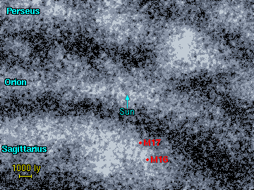

على بعد 10 درجات قوسية شمال سديم البحيرة يقبع زوج من السدم الشهيرة يعرفان باسم سديم النسر (الأعلى) و سديم أوميغا (الأسفل). تظهر هذه الصورة السديمين على خلفية كثيفة من نجوم ذراع القوس في المجرة، البقع الداكنة الكبيرة في هذه الصورة تبين لنا أن سديمي النسر و أوميغا هما المساحات اللامعة و المضيئة الوحيدة في منطقة يكثر فيها السدم العاتمة.
الجدول يبين لنا لائحة بالسدم الموجودة في هذه المنطقة، و يعتبر سديم النسر (M16) هو الأكبر بين هذين السديمين، يضاف إلى ذلك فإن الاسم M16 أو ( NGC 6611) غالبا ما يستخدم لتسمية المنطقة المركزية اللامعة و الاسم IC 4703 يستخدم لتسمية السديم كاملا. السديم أوميغا (M17) هو السديم الثاني هنا و يتضمن كلا من IC 4706 و IC 4707 ، و هناك سديم خافت آخر و كبير بشكل واضح يدعى
IC 4701
1 2 3 4 5 6 7 8
Catalogue Equatorial Galactic Size Type Distance Size Other Names
Number Coordinates Coordinates (arcmins) (ly) (ly)
RA (2000) Dec l° b°
--------------------------------------------------------------------------------------
IC 4701 18 16.0 -16 44 14.1 0.0 40' E 4250? 50?
IC 4703 18 18.6 -13 58 16.8 +0.8 60' E 5700 100
NGC 6611 18 18.8 -13 48 17.0 +0.8 8' E 5700 13 M16, Eagle nebula
IC 4706 18 19.7 -16 01 15.1 -0.4 4' E 4250 5
IC 4707 18 19.9 -16 00 15.2 -0.5 4' E 4250 5
NGC 6618 18 20.8 -16 11 15.1 -0.8 30' E 4250 40 M17, Omega nebula
IC 1287 18 30.4 -10 48 20.9 -0.3 20' R 4450? 25?
|
--------------------------------------------------------------------------------------- العمود 1: إسم السديم النظامي في المصنف. العمود 2: إحداثيات المطلع المستقيم و الميل - حولية فلكية للعام 2000. العمود 3: إحداثيات الطول (l) و العرض (b) المجريين. العمود 4: الحجم الزاوي للسديم بالدقيقة القوسية. العمود 5: نوع السديم E = إصداري, R = إنعكاسي. العمود 6: المسافة التقريبية إلى السديم مقدرة بالسنة الضوئية. العمود 7: الحجم التقريبي للسديم مقدرا بالسنة الضوئية. العمود 8: الاسم البديل للسديم. |
هذه العناقيد النجمية الأكثر قربا و ارتباطا بسديمي النسر و أوميغا. و كلا السديمين يمتلكان عناقيد نجمية في منتصفها (NGC 6611 و NGC 6618) و المسؤولين عن توهج الغاز في هذين السديمين.
1 2 3 4 5 6 7
Catalogue Equatorial Galactic Size Distance Age Other Names
Name Coordinates Coordinates (arcmins) (ly) (million
RA (2000) Dec l° b° years)
---------------------------------------------------------------------------------
Trumpler 32 18 17.5 -13 21 17.2 +1.3 5' 5600 300
NGC 6596 18 17.6 -16 39 14.3 -0.3 10' ? ?
NGC 6604 18 18.1 -12 15 18.2 +1.7 5' 5550 6
NGC 6611 18 18.9 -13 48 17.0 +0.8 6' 5700 8 M16
NGC 6613 18 20.0 -17 06 14.2 -1.0 5' 4250 17 M18
NGC 6618 18 20.8 -16 10 15.1 -0.7 25' 4250 1 M17
NGC 6631 18 27.2 -12 02 19.5 -0.2 6' ? ?
NGC 6645 18 32.7 -16 53 15.8 -3.6 14' ? ?
NGC 6649 18 33.5 -10 24 21.6 -0.8 5' 4450 37
|
العمود 1: إسم العنقود النجمي النظامي في المصنف. العمود 2: إحداثيات المطلع المستقيم و الميل - حولية فلكية للعام 2000. العمود 3: إحداثيات الطول (l) و العرض (b) المجريين. العمود 4: الحجم الزاوي للعنقود النجمي مقدرا بالدقيقة القوسية. العمود 5: المسافة إلى العنقود النجمي مقدرة بالسنة الضوئية. العمود 6: العمر التقريبي للعنقود النجمي مقدرا بملايين السنوات. العمود 7: الاسم البديل للعنقود النجمي.
References:
Dias W, Alessi B, Moitinho A, Lápine J, (2002). New catalogue of optically
visible open clusters and candidates. Astron and Astrophys, 389, 871.
|
هنا نجد خريطة لكلا السديمين ، و هما يمثلان تلك البقع اللامعة بين العديد من الغيوم الغازية و الغباريةالتي نستطيع إيجادهاعلى امتداد ذراع القوس المجري.
صورة لسديم أوميغا - و هو من السدم الأقرب من بين السديمين المذكورين، و يتوضع سديم أوميغا إلى شمال شرق نهاية غيمة غازية ضخمة عاتمة و ممتدة عبر مئات السنوات الضوئية. و نجوم العنقود الموجود في مركز السديم فتية جدا و بمعدل أعمار تبلغ 1 مليون سنة.
|  | يتوضع السديمان في ذراع القوس المجري، و سديم النسر (M16) هو الأكثر بعدا بينهما و يقع على مسافة 5700 سنة ضوئية من و يقع سديم أوميغا (M17) على بعد 4250 سنة ضوئية و يعتقد أنه أقرب إلى سديم البحيرة منه إلى سديم النسر. |
صورة لسديم النسر و يرى مركزه لامعا لوجود عنقود نجمي متكدس ذو قطر يبلغ 10 سنين ضوئية.
صورة ملتقطة لسديم النسر عبر تلسكوب هبل الفضائي، في نيسان من العام 1995 و تعتبر من الصور الأكثر شهرة و التي التقطها هذا التلسكوب. تظهر في الصورة أعمدة هائلة من الهيدروجين ممتدة على مسافات تبلغ عدة سنوات ضوئية، و يعتقد بأن العديد من النجوم في طور النشأة داخل الأعمدة الضخمة هذه و التي من المفترض أنها تلقت صدمات من الرياح النجمية الآتية من النجوم المجاورة. الصورة مذهلة لدرجة أنها لاقت انتشارا واسعا في كل مكان. و دور نشر الكتب الفلكية قامت بشكل متكرر باستخدام هذه الصورةو كان من المحبب طباعتها في الكتب، و البوسترات، و الروزنامات، على الرغم من وجود العديد من الصور المختلفة الأخرى المتوفرة و الملتقطة باستخدام تلسكوب هبل.
قليلون هم من يدركون بأن الألوان في هذه الصورة ليست واقعية، فالصور الملتقطة باستخدام تلسكوب هبل الفضائي نادرا ما تستخدم ألوان واقعية. استخدمت الألوان عادة لزيادة القيمة العلمية لهذه الصورة . قمت هنا [الكلام المؤلف] أدناه بإعادة بناء صورة سديم النسر باستخدام توازن لوني واقعي. و هو تصور قريب جدا من الواقع الذي يبدو عليه السديم فيما لو كنت واقفا تنظر إليه على مسافة بضعة سنوات ضوئية من مركز السديم لاحظ بأن ألوان النجوم في الصورة ليست وردية اللون و لكن بيضاء - مزرقة.